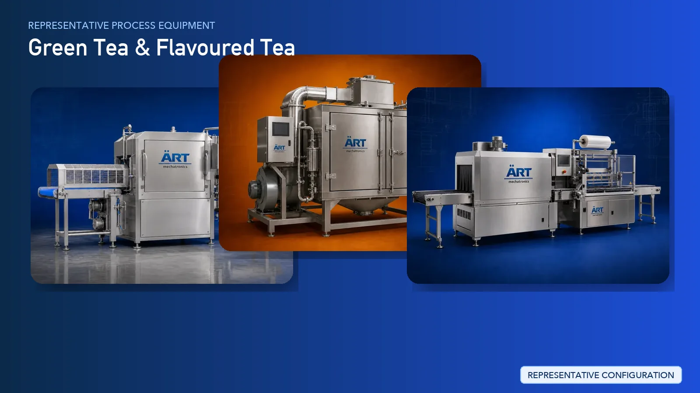

Green Tea & Flavored Tea Processing Plant & Machinery Solutions (Herbal & Wellness Tea Production)
Green tea and flavored tea processing is a rapidly growing segment in the global beverage and wellness industry, producing products such as green tea, herbal tea, lemon tea, ginger tea, masala tea, and flavored tea blends. These products are widely consumed due to their health benefits,…

About Green Tea & Flavoured Tea processing
Unlike black tea, green tea processing involves minimal oxidation, requiring careful handling to preserve natural color, nutrients, and aroma. Flavored tea production further requires precise blending and flavor infusion techniques to achieve consistent taste and quality.
ART Mechatronics provides complete turnkey solutions for green tea and flavored tea processing plants, offering advanced systems for steaming, rolling, drying, blending, flavoring, and packaging. Our solutions are designed for premium product quality, aroma preservation, and efficient large-scale production for domestic and export markets.
Complete Green Tea Process Flow
Fresh tea leaves are received and gently handled.
Ensures minimal damage to leaves.
Leaves are heated to stop oxidation.
Ensures:
- Preservation of green color
- Retention of nutrients
Leaves are rolled into desired shapes.
Produces:
- Twisted or curled leaf shapes
Moisture is reduced to stabilize tea.
Ensures:
- Long shelf life
- Flavor preservation
Tea is graded based on size and quality.
Flavored & Herbal Tea Process
Green tea or base tea is blended with herbs and ingredients. Ingredients Used:
Machines Used:
Ensures:
- Uniform distribution
- Consistent flavor
Flavoring agents or extracts are added.
Ensures premium product quality.
Moisture is controlled after blending.
Final inspection ensures consistency and hygiene.
Suitable for:
- Tea bags
- Sachets
- Loose leaf tea
Machinery Required for Green Tea & Flavored Tea Plant
- Leaf Handling Systems
- Steaming / Fixation Unit
- Tea Rolling Machine
- Tea Dryer
- Vibro Sifter / Grader
- Ribbon Blender / Tea Blender
- Flavor Dosing System
- Coating Drum
- Packaging Machines
Turnkey Green Tea Plant Solutions
ART Mechatronics offers complete turnkey solutions for green tea and flavored tea processing plants, including:
- Process design & plant layout
- Fixation and drying systems
- Blending and flavoring systems
- Grading and packaging lines
- Automation & control panels
- Installation & commissioning
- After-sales support
We customize solutions based on:
- Product type (green tea, herbal tea, flavored tea)
- Production capacity
- Automation level
- Packaging format
Why Choose Art Mechatronics
- Expertise in tea and herbal processing systems
- Advanced flavor blending technology
- Aroma and nutrient preservation capability
- Hygienic food-grade plant design
- High-efficiency production systems
- Global export capability
Machinery in a Green Tea & Flavoured Tea plant
Where it's used
Get pricing & specs for the Green Tea & Flavoured Tea plant
Share the product, target capacity, current process and plant location. These details help our engineers discuss the right machine or line configuration.
One partner, from design to start-up
ART Mechatronics designs, manufactures, installs and commissions your Green Tea & Flavoured Tea solution with regional presence in India, UAE and Thailand.